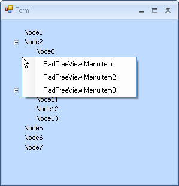
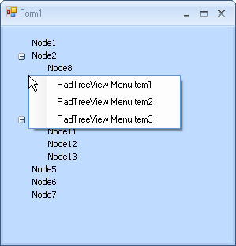

Context Menus
Context menus can be added to a RadTreeView or to each individual node. Context menus for nodes take precedence over the menu for the RadTreeView. To add a context menu to your RadTreeView, you should drag and drop RadContextMenu component on your form and then create a RadContextMenuManager. This will add a RadContextMenu property for RadTreeView and you will be able to set the RadContextMenu instance to this property.
You can also assign a RadContextMenu instance to an individual node. However, you do not need a RadContextMenuManager for this purpose. You can simply use the RadTreeView Property Builder:
Drag and drop RadTreeView control on your form.
Drag and drop RadContextMenu component on your form. Add several RadMenuItems to it.
Click the Smart-Tag of the RadContextMenu instance. Choose Add ContextMenuManager from the Action Menu to create a RadContextMenuManager. A RadContextMenuManager instance will be created on the form and a RadContextMenu property will become available for the RadTreeView instance.
Set the RadContextMenu property to the RadContextMenu instance.
Create a new instance of RadContextMenu by a drag and drop operation. Add several RadMenuItems to it.
Open RadTreeView Property Builder and assign the second RadContextMenu instance to the desired nodes by setting the ContextMenu property.
Run the project. As you can notice below, when you right click on a RadTreeNode we get the second RadContextMenu instance shown and when we right click just on the RadTreeView, the first RadContextMenu instance is shown.
 

In addition, RadTreeView has a built-in context menu which is disabled by default. Enable the default menu by setting the AllowDefaultContextMenu property to true. The built-in context menu has the following default items:
Edit - starts the tree view editor for the current node.
Expand - expands the current node
Collapse - collapses the current node
New - create a new instance of the current node
Delete - deletes the current node
Add or remove "New" and "Delete from the context menu by setting the AllowAddNewInContextMenu and __AllowDeleteInContextMenu__properties of RadTreeView.